vignettes/special_data_type.Rmd
special_data_type.RmdFor time series data, values on x-axis are time points in a certain unit, e.g. days, or hours, and are linearly distributed along the axis. To map time series data to the spiral, internally a simple conversion is applied. Assume the first time point is t1 and the last time point is t2, the number of time points is n = t2 - t1 which is the time difference between the two. If we take [0, 1] for the first time point, [1, 2] for the second time point, and [n-1, n] for the last time point, then internally the spiral is initialized with xlim = c(0, n) and a time point d is converted to the internal numeric value by d - d1 + 0.5.
The unit of time point can be set via the argument unit_on_axis and the unit of the period can be set via the argument period, e.g. unit_on_axis = "days" and period = "years". unit_on_aixs can be set as one of "days", "months", "weeks", "hours", "mins" and "secs". And there are also corresponding valid values for period. If these two arguments are not set, they are guessed from xlim automatically.
In the following examples, also note the default value of polar_lines_by is also different for different period. E.g. there are 12 polar lines for years (12 months), 7 polar lines for weeks (7 weekdays), 24 polar lines for days (24 hours).
spiral_initialize_by_time(xlim = c("2014-01-01", "2021-06-17"))## 'unit_to_axis' is set to 'days'.
## 'period' is set to 'years'.
spiral_track(height = 0.6)
spiral_axis()
spiral_initialize_by_time(xlim = c("2021-01-01 00:00:00", "2021-01-05 00:00:00"))## 'unit_to_axis' is set to 'mins'.
## 'period' is set to 'days'.
spiral_track(height = 0.6)
spiral_axis()
spiral_initialize_by_time(xlim = c("2021-01-01 00:00:00", "2021-01-01 00:10:00"),
unit_on_axis = "secs", period = "mins")
spiral_track(height = 0.6)
spiral_axis()As shown in previous examples, the values for xlim should be a time/date object or an object that can be converted to the time/date object. Later when adding graphics, the time/date objects can also be used as the x-locations for the low-level graphics functions. e.g.
spiral_points("2021-01-01", 0.5)Genomic data can be represented as a data frame (e.g. in bed format), or as a GRanges object. To initialize the spiral for genomic data visualization, the data on x-axis corresponds to the genomic coordinates. The spiral with genomic data can be initialized by the function spiral_initialize_by_gcoor(). The genomic coordinates are linear numeric values, thus, spiral_initialize_by_gcoor() is basically the same as spiral_initialize(). The only difference is the axis labels are automatically formated for genomic coordinates.
Also since normally there are no periodic patterns for genomc data, scale_by is by default set to "curve_length".
spiral_initialize_by_gcoor(xlim = c(2e6, 8e6)) # 2MB to 8MB
spiral_track(height = 0.6)
spiral_axis()
spiral_points(x = runif(500, min = 2e6, max = 8e6), runif(500), pch = 16, gp = gpar(col = 2))